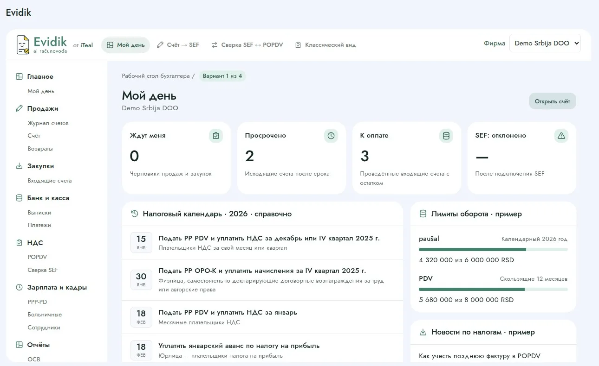
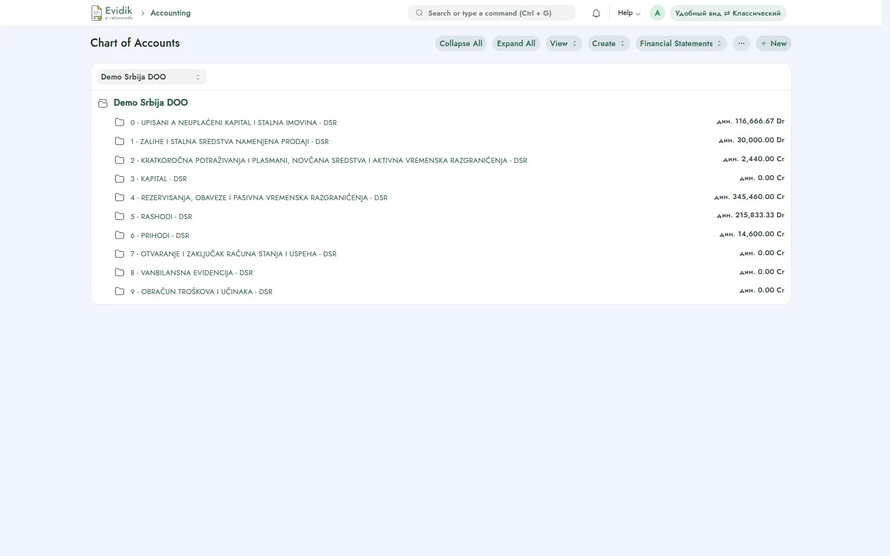

What Evidik does today
Ten features tested on the demo database. The screens are real, the data is for demonstration.
The “My day” desk
The accountant sees the whole day on one screen.
- Drafts, overdue invoices, bills to pay
- Tax calendar for the year
- Flat-rate and VAT limits

Chart of accounts 89/2020
The program sets up the chart of accounts when a company opens.
- Classes 0–9 by Serbian rules
- Balance for each account
- Groups collapse and expand

Sales with VAT and SEF
A customer invoice with 20 % or 10 % VAT and the date of supply.
- SEF submission: UBL 2.1 + CIUS-RS
- Schema check before sending
- Returns and overdue invoices

Purchases
A supplier invoice with VAT and goods receipt.
- Supplier invoice number and date
- Goods received into stock
- Bills to pay on the desk

General ledger
All postings for a period, filtered by account and partner.
- Filter by account, partner, document
- Open the document from a row
- Opening and closing balances

Fixed assets
A fixed asset card and a depreciation schedule.
- Putting into use
- Depreciation on schedule
- The program makes the postings

Payroll
Salary, tax and contributions with postings.
- Payslip per employee
- Tax and contributions
- Full Serbian payroll with PPP-PD is in progress

Trial balance
Trial balance for all accounts for any period.
- Opening and closing balances
- Debit and credit turnover
- Totals by account group

Balance sheet and income statement
Financial statements from the books.
- Assets, liabilities, equity
- Profit and loss for the period
- Monthly chart

Period closing
After closing, nobody can change documents backdated.
- One button closes the period
- Backdated changes are blocked
- A month-end closing assistant is in progress

Stock
Receipts, write-offs, stocktaking. Stock value matches the books.
Bank and cash
Payments, advances, settlements with customers and suppliers.